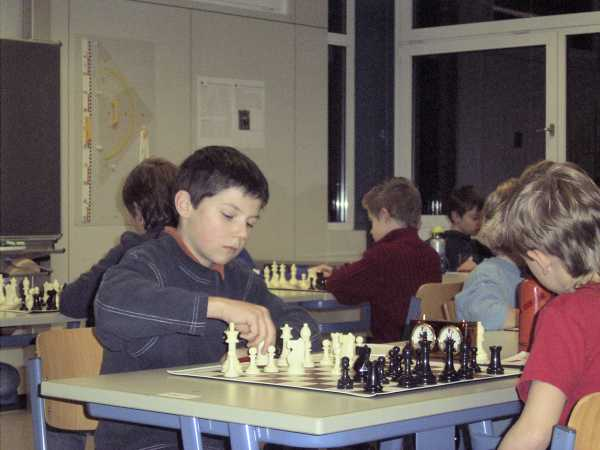
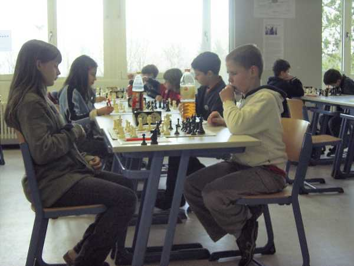
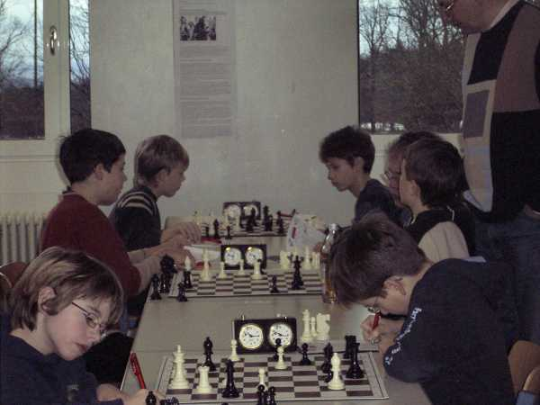
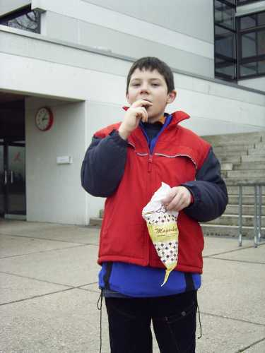

Daniel Bahner hatte sich als Vizebezirksmeister der U12 qualifiziert.

Nach der Rochade

Turnieratmosphäre in Neuenbürg

Es musste mitgeschrieben werden, dafür gab's auch eine DWZ-Auswertung!

Am Schluß eine kleine Stärkung.
Daniel wurde 21. von 33 in der U12